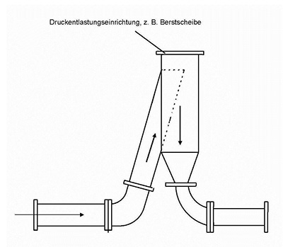

(1) Die für Gase und Dämpfe genannten Einrichtungen zur explosionstechnischen Entkopplung sind bei Stäuben im Allgemeinen nicht einsetzbar (Verstopfungsgefahr etc.). Bei den für Stäube geeigneten Einrichtungen zur explosionstechnischen Entkopplung unterscheidet man zwei Systeme, vollständige Entkopplung und Teil-Entkopplung:
(2) Die Unterscheidung zwischen vollständiger Entkopplung und Teil-Entkopplung ist für die praktische Anwendung wichtig, da die Notwendigkeit einer vollständigen Entkopplung hinsichtlich Flamme und Druck nicht in allen Fällen besteht, sondern in einigen Fällen lediglich das Erzielen einer Flammenisolation oder einer Druckbegrenzung ausreicht. Geeignet für den Einbau in Rohrleitungssysteme oder zum Produktaustrag sind z. B. die unter den Abschnitten 8.2 bis 8.8 genannten Einrichtungen.
(1) Die zu entkoppelnde Explosion wird durch geeignete Detektoren erkannt. Über eine Steuereinheit wird ein Auslösemechanismus aktiviert, der das Explosionsschutzventil innerhalb einer ausreichend kurzen Zeit schließt, bevor Druck und Flamme dieses erreicht haben.
(2) Der für die Wirksamkeit des aktiven Explosionsschutzventiles erforderliche Einbauabstand ist zu beachten. Bei der explosionstechnischen Entkopplung mittels aktivem Explosionsschutzventil handelt es sich um eine vollständige Entkopplung. Bezüglich der erforderlichen Vorgaben des Arbeitgebers zur Auslegung aktiver Explosionsschutzventile wird z. B. auf Abschnitt 5 der DIN EN 15089:2009 verwiesen.
(1) Beim Überschreiten einer bestimmten Strömungsgeschwindigkeit in der Rohrleitung schließt das Explosionsschutzventil automatisch und verbleibt anschließend in geschlossener Stellung. Die für das Schließen notwendige Strömungsgeschwindigkeit wird durch die Druckwelle der Explosion erzeugt. Passive Explosionsschutzventile dürfen nur in waagrecht verlegte Rohrleitungen eingebaut werden, soweit dies in der Betriebsanleitung des Herstellers nicht anders beschrieben wird. Passive Explosionsschutzventile eignen sich nur für relativ geringe Staubbelastungen, z. B. Reinluftseite von Filteranlagen.
(2) Reicht die zu erwartende Erhöhung der Strömungsgeschwindigkeit durch die Druckwelle der Explosion für ein rechtzeitiges Auslösen eines passive Explosionsschutzventils nicht aus, muss ein aktives Explosionsschutzventil eingesetzt werden, bei dem die Explosion durch geeignete Detektoren erkannt wird und das Explosionsschutzventil mittels einer Hilfsströmung, z. B. Einblasen von Stickstoff auf den Schließkörper rechtzeitig geschlossen wird.
(3) Der für die Eignung und Funktionsfähigkeit von Explosionsschutzventilen erforderliche Einbauabstand ist zu beachten. Bei der explosionstechnischen Entkopplung mittels passivem Explosionsschutzventil handelt es sich um eine vollständige Entkopplung. Bezüglich der erforderlichen Vorgaben des Arbeitgebers zur Auslegung passiver Explosionsschutzventile wird z. B. auf Abschnitt 5 der DIN EN 15089:2009 verwiesen.
(1) Zellenradschleusen zur explosionstechnischen Entkopplung müssen für den zu erwartenden Explosionsdruck explosionsfest und zünddurchschlagsicher ausgeführt sein.
(2) Im Explosionsfall muss die Zellenradschleuse automatisch, z. B. über einen Detektor, stillgesetzt werden, damit das Austragen von brennendem Produkt in nachfolgende Anlagenteile verhindert wird.
(3) Wird die Überwachung nicht vom Hersteller mitgeliefert, sind die Anforderungen an diese sicherheitsrelevante MSR-Einrichtung in Anlehnung an die TRGS 725 festzulegen. Bei der explosionstechnischen Entkopplung mittels Zellenradschleuse handelt es sich um eine vollständige Entkopplung. Bezüglich der erforderlichen Vorgaben des Arbeitgebers zur Auslegung von Zellenradschleusen wird z. B. auf Abschnitt 5 der DIN EN 15089:2009 verwiesen.
(1) Explosionssichere Taktschleusen bestehen im Allgemeinen aus zwei jeweils für den zu erwartenden Explosionsdruck explosionsfest und zünddurchschlagsicher ausgeführten Ventilen bzw. Schiebern, mit denen eine Schleuse gebildet wird. Durch eine entsprechende funktionsgeprüfte Steuerung ist gewährleistet, dass sich immer mindestens ein Ventil bzw. Schieber in geschlossener Stellung befindet.
(2) Im Explosionsfall muss die explosionssichere Taktschleuse automatisch, z. B. über einen Detektor, umgehend geschlossen werden, damit das Austragen von brennendem Produkt in nachfolgende Anlagenteile verhindert wird.
(3) Wird die Überwachung nicht vom Hersteller mitgeliefert, sind die Anforderungen an diese sicherheitsrelevante MSR-Einrichtung in Anlehnung an die TRGS 725 festzulegen. Bei der explosionstechnischen Entkopplung mittels explosionssicherer Taktschleuse handelt es sich um eine vollständige Entkopplung. Bezüglich der erforderlichen Vorgaben des Arbeitgebers zur Auslegung von Anforderungen an explosionssichere Taktschleusen wird z. B. auf Abschnitt 5 der DIN EN 15089:2009 verwiesen.
(1) Löschmittelsperren bestehen im Wesentlichen aus einem oder mehreren Detektoren, einer Steuereinheit sowie einem oder mehreren Löschmittelbehältern Eine anlaufende Explosion wird durch Detektoren erkannt, die das Eindüsen von Löschmittel in die Rohrleitung zwischen den zu entkoppelnden Anlagenteilen auslösen. Durch das Löschmittel wird die Explosionsflamme gelöscht. Ein Ausbreiten des Explosionsdrucks wird durch die Löschmittelsperre nicht verhindert.
(2) Der für die Eignung und Funktionsfähigkeit von Löschmittelsperren erforderliche Einbauabstand ist zu beachten.
(3) Bei der explosionstechnischen Entkopplung mittels Löschmittelsperre handelt es sich um eine Teil-Entkopplung. Die mögliche Druckerhöhung ist bei der Auslegung der hinter der Löschmittelsperre angeordneten Anlagenteile zu berücksichtigen. Es ist zu beachten, dass infolge der Druckausbreitung sowohl Löschmittel als auch unverbrannte Stäube und Verbrennungsprodukte durch die Rohrleitung gedrückt werden und in andere Anlagenteile oder in die Umgebung gelangen können.
(1) Ein Entlastungsschlot ist eine passive mechanische Entkopplungseinrichtung, mit der Vorkompressionseffekte und Flammenstrahlzündung verhindert werden soll, um damit die Wahrscheinlichkeit einer Explosionsübertragung in angeschlossene Anlagenteile zu verringern. Das erfolgt durch Änderung der Strömungsrichtung um 180 Grad bei gleichzeitiger Druckentlastung am Umlenkpunkt. Dies wird durch eine besondere Rohrleitungsgestaltung und -anordnung (siehe Abbildung 1) und üblicherweise durch den Einsatz einer Druckentlastungseinrichtung, z. B. Berstscheibe, am Umlenkpunkt erreicht.

Abbildung 1: Schematische Darstellung eines Entlastungsschlotes
Durch den Entlastungsschlot kann die Explosionsübertragung in der Regel nicht zuverlässig verhindert werden, so dass zusätzliche Maßnahmen erforderlich sind (FSA Bericht F-05-9706). Die Ausbreitung der Flammenfront wird jedoch so gestört, dass in dem nachgesetzten Leitungsteil zunächst nur mit einem langsamen Anlaufen der Explosion zu rechnen ist.
(2) Für den Einsatz des Entlastungsschlotes gelten im Wesentlichen die gleichen Einsatzbeschränkungen hinsichtlich der freiwerdenden Stoffe und der Gefährdung Beschäftigter, anderer Personen oder der Umwelt wie für die Explosionsdruckentlastung (siehe Abschnitt 5 Absätze 1 bis 3).
(3) Die in der Prüfung ermittelte maximal zulässige Länge der Rohre zwischen Explosionsschlot und angeschlossenem Behälter darf nicht überschritten werden.
(4) Da bei dem Einsatz von Entlastungseinrichtungen an einem Entlastungsschlot u. U. andere Belastungsfälle auftreten als bei dem Einsatz an Behältern, muss die Eignung und Funktionsfähigkeit der Entlastungseinrichtung für diesen Anwendungsfall nachgewiesen sein. Der Anwendungsfall beinhaltet auch das Vorhandensein von Rohrkrümmern bzw. Rohrverengungen und die Ausrichtung des Explosionsschlotes.
(5) Bei der explosionstechnischen Entkopplung mittels Entlastungsschlot handelt es sich um eine Teil-Entkopplung. Die Einschränkungen gegenüber einer vollständigen Entkopplung erfordern zusätzliche Maßnahmen für die hinter dem Entlastungsschlot angeordneten Anlagenteile. Wenn bei einer Objektabsaugung eine Entkopplung des Abscheiders zu den Ansaugstellen erforderlich ist und explosionsfähige Gemische in der Saugleitung sicher ausgeschlossen sind, kann trotz der oben genannten Einschränkungen mit dem Entlastungsschlot ein ausreichender Schutz der Beschäftigten und Dritter erreicht werden (siehe Absatz 3). Bezüglich der erforderlichen Vorgaben des Arbeitgebers zur Auslegung von Anforderungen an Entlastungsschlote wird z. B. auf Abschnitt 4 der DIN EN 16020:2011 verwiesen.
(1) Im Zusammenhang mit den Schutzmaßnahmen „explosionsfeste Bauweise für einen reduzierten Explosionsdruck“ und „Explosionsdruckentlastung“ oder „Explosionsunterdrückung“ können Produktvorlagen mit ausreichender Füllhöhe eine geeignete Maßnahme zur explosionstechnischen Entkopplung sein. Dies setzt eine hinreichend feste Austragseinrichtung voraus, auf der die Produktvorlage „aufliegt“, z. B. Zellenradschleuse, Förderschnecke oder Prozessventil. Die Austragseinrichtung selbst muss hierfür nicht flammendurchschlagsicher sein.
(2) Die Produktüberdeckung muss so hoch sein, dass unter Explosionsdruckbelastung ein Flammendurchschlag nicht erfolgen kann. Der erforderliche Mindestfüllstand muss auf geeignete Weise sichergestellt sein.
(3) Wird Produktüberdeckung durch MSR-Einrichtungen überwacht, sind die Anforderungen an diese sicherheitsrelevante MSR-Einrichtung in Anlehnung an die TRGS 725 festzulegen.